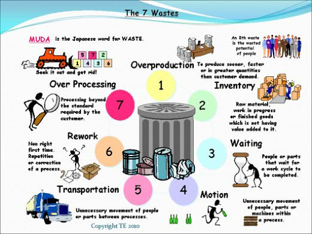
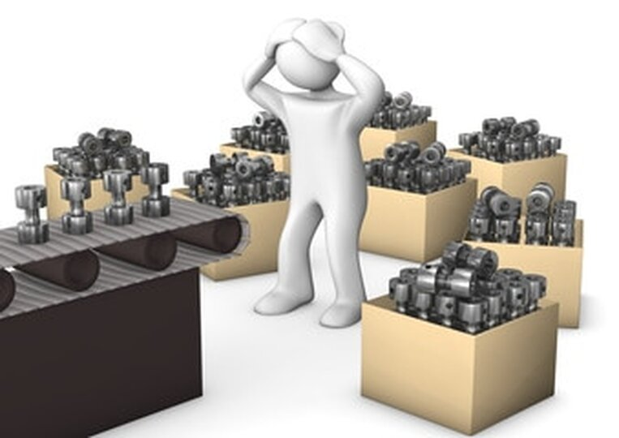
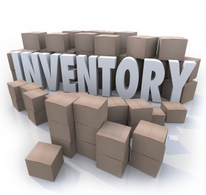
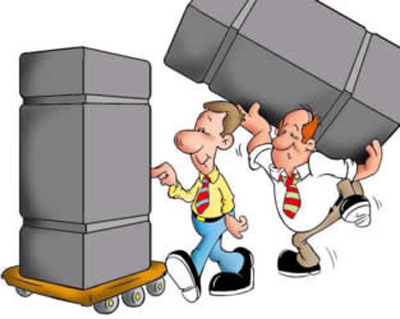

การกำจัดความสูญเสีย (7 Waste)
เป็นกุญแจดอกหนึ่งในระบบ Lean Manufacturing
เป็นระบบกำจัดความสูญเสียและปรับปรุงคุณภาพอย่างต่อเนื่องในกระบวนการผลิต
เพื่อเพิ่มประสิทธิภาพให้กับกิจกรรมหรืองานที่ดำเนินการ ข้อเสียจากการมี 7 Waste คือ ใช้เวลาการผลิตนาน
สินค้ามีคุณภาพต่ำ และต้นทุนสูง (ที่มา : Hank Czarnecki and Nicholas Loyd, n.d.)
กระบวนการผลิตมักจะพบว่ามีความสูญเสียต่างๆแฝงอยู่ไม่มากก็น้อย
ซึ่งเป็นเหตุให้ประสิทธิภาพและประสิทธิผลของกระบวนการต่ำกว่าที่ควรจะเป็น
ดังนั้นจึงมีแนวคิดเพื่อพยายามจะลดความสูญเสียเหล่านี้เกิดขึ้นมากมาย (ที่มา : Marry Poppendieck., 2002)
แนวคิดหนึ่งที่คิดค้นโดย Mr.Shigeo Shingo และ Mr.Taiichi Ohno คือ ระบบการผลิตแบบโตโยต้า
(Toyota
production
system) โดยมีวัตถุประสงค์เพื่อขจัดความสูญเสีย 7 ประการ

http://www.wisdommaxcenter.com
ความสูญเสีย 7 ประการ ได้แก่
- ความสูญเสียเนื่องจากการผลิตมากเกินไป (Overproduction)
- ความสูญเสียเนื่องจากการเก็บวัสดุคงคลัง (Inventory)
- ความสูญเสียเนื่องจากการขนส่ง (Transporation)
- ความสูญเสียเนื่องจากการเคลื่อนไหว (Motion)
- ความสูญเสียเนื่องจากกระบวนการผลิต (Processing)
- ความสูญเสียเนื่องจากการรอคอย (Delay)
- ความสูญเสียเนื่องจากการผลิตของเสีย (Defect)

https://www.leanstrategiesinternational.com
1.ความสูญเสียเนื่องจากการผลิตมากเกินไป(Overproduction)
การผลิตสินค้าปริมาณมากเกินความต้องการการใช้งานในขณะนั้น หรือผลิตไว้ล่วงหน้า
เป็นเวลานาน มาจากแนวความคิดเดิมที่ว่าแต่ละขั้นตอนจะต้องผลิตงานออกมาให้มากที่สุดเท่าที่จะทำได้
เพื่อให้เกิดต้นทุนต่อหน่วยต่ำสุดในแต่ละครั้งโดยไม่ได้คำนึงถึงว่าจะทำให้มีงานระหว่างทำ (Work in process, WIP)
ในกระบวนการเป็นจำนวนมากและทำให้กระบวนการผลิตขาดความยืดหยุ่น
ปัญหาจากการผลิตมากเกินไป
1. เสียเวลาและแรงงานไปในการผลิตที่ยังไม่จำเป็น
2. เสียพื้นที่ในการจัดเก็บ WIP
3. เกิดการขนย้ายวัสดุที่ซ้าซ้อนโดยไม่จำเป็น
4. ของเสียไม่ได้รับการแก้ไขทันที
5. ต้นทุนจม เนื่องจากต้องการพื้นที่เพื่อจัดเก็บมากขึ้น (More storage area) และเกิดค่าใช้จ่ายในการจัดเก็บ
เช่น การเช่าโกดัง เพื่อเก็บวัสดุและสินค้า
6. ปิดบังปัญหาการผลิต เช่น เครื่องจักรเสีย
7. ใช้ทรัพยากรในการบริหารจัดการมากขึ้นเช่น พนักงานในการควบคุมงาน งานเอกสาร เป็นต้น
8. ความเสื่อมของสภาพสินค้า
การปรับปรุง
1. บำรุงรักษาเครื่องจักรให้มีสภาพพร้อมผลิตตลอดเวลา
2. ลดเวลาการตั้งเครื่องจักร (Reduce setup time) โดยศึกษาเวลาในการตั้งเครื่องจักร จากนั้นทำการปรับปรุง
• จัดเตรียมเครื่องมือและอุปกรณ์ให้พร้อมก่อนเริ่มตั้งเครื่อง
• แยกขั้นตอนที่ทำได้ในขณะที่เครื่องจักรยังทำงานอยู่ออกจากขั้นตอนที่ต้องทำเมื่อเครื่องจักรหยุดเท่านั้น
• จัดลำดับขั้นตอนในการตั้งเครื่องจักรให้เหมาะสม
• กระจายงานอย่างเหมาะสมโดยไม่ให้เกิดการรองาน
• จัดหา/ทำอุปกรณ์เพื่อช่วยในการกำหนดตำแหน่งอย่างรวดเร็ว
3. ปรับปรุงขั้นตอนที่เป็นคอขวด (Bottle-neck) ในกระบวนการ เพื่อลดรอบเวลาการผลิต
4. ผลิตในปริมาณและเวลาที่ต้องการเท่านั้น โดยปรับเวลาของกระบวนการให้สอดคล้องกับปริมาณการผลิต (Synchronize
time and amount of process)
5. ทำการผลิตเฉพาะที่จำเป็น (Make only what is need now)
6. ฝึกให้พนักงานมีทักษะหลายอย่าง

https://www.qstockinventory.com
2.ความสูญเสียเนื่องจากการเก็บวัสดุคงคลัง (Inventory)
การซื้อวัสดุคราวละมากๆ เพื่อเป็นประกันว่าจะมีวัสดุสำหรับผลิตตลอดเวลา หรือเพื่อให้ได้ส่วนลดจากการสั่งซื้อ
จะส่งผลให้วัสดุที่อยู่ในคลังมีปริมาณมากเกินความต้องการใช้งานอยู่เสมอ เป็นภาระในการดูแลและการจัดการ
ซึ่งทางโตโยต้าถือว่าสินค้าคงคลังเปรียบเสมือนปีศาจ (Evil)
ปัญหาจากการเก็บวัสดุคงคลัง
1. ใช้พื้นที่จัดเก็บมาก
2. ต้นทุนจม อยู่ในกระบวนการนานเท่าที่วัสดุถูกสั่งมาจนกระทั่งทำการผลิตเสร็จ เละขายให้กับลูกค้า
3. เมื่อเปลี่ยนคำสั่งการผลิต จะมีวัสดุตกค้างอยู่ในคลังสินค้ามากโดยไม่ทราบว่าจะมีความต้งการใช้อีกเมื่อไร
4. วัสดุเสื่อมคุณภาพและล้าสมัย (หากระบบการควบคุมวัสดุคงคลังไม่ดีพอ)
5. สั่งซื้อซ้ำซ้อน (หากระบบการควบคุมวัสดุคงคลังไม่เพียงพอ)
6. ต้องการแรงงานและการจัดการมากในการจัดเก็บ
การปรับปรุง
1. กำหนดระดับในการจัดเก็บ มีจุดสั่งซื้อที่ชัดเจน
2. จัดทำแผนการจัดซื๊อให้สอดคล้องกับกำหนดการผลิต
3. สร้างระบบการผลิตแบทันเวลาพอดี (Jit In Time
)
4. ลดช่วงเวลานำ (Lead Time) ในการจัดซื๊อ เพื่อลดความถี่ของการจัดซื๊อคราวละมากๆ โดยการสร้างสัมพันธ์กับคู่ค้า
และการจัดการระบบห่วงโซ่อุปทาน (Supply chain management)
5. ปรับการไหลของงานให้สอดคล้องกับกระบวนการ เพื่อลดการสะสมของงานระหว่งกระบวนการ
6. ควบคุมปริมาณวัสดุโดยใช้เทคนิคการควบคุมด้วยการมองเห็น (Visual control)
เพื่อให้สามารถเข้าใจและสังเกตได้ง่าย อีกทั้งช่วยให้เกิดความสะดวก
และลดความผิดพลาดในการสั่งซื้อเกินความจำเป็นได้
7. ใช้ระบบเข้าก่อน ออกก่อน (First in first out) เพื่อป้องกันไม่ให้มีวัสดุตกค้างเป็นเวลานาน
8. วิเคราะห์หาวัสดุทดแทน (Value engineering) ที่สามารถสั่งซื้อได้ง่ายมาใช้แทน
เพื่อลดปริมาณวัสดุที่ต้องทำการจัดเก็บ
https://www.indiamart.com
3. ความสูญเสียเนื่องจากการขนส่ง (Transporation)
การขนส่งเป็นกิจกรรมที่ไม่ก่อให้เกิดมูลค่าเพิ่มแก่วัสดุ
ดังนั้นจึงต้องควบคุมและลดระยะทางในการขนส่งลงให้เหลือเท่าที่จำเป็นเท่านั้น
ปัญหาจากการขนส่ง
1. ต้นทุนในการขนส่ง ได้แก่ เชื้อเพลิง แรงงาน อุปกรณ์การขนย้าย และค่าบำรุงรักษาอุปกรณ์เหล่านั้น
2. เสียเวลาในการผลิต
3. วัสดุเสียหายหากวิธีการขนส่งไม่เหมาะสม
4. เกิดอุบัติเหตุหากขาดความระมัดระวังในการขนส่ง
การปรับปรุง
1. วางผังเครื่องจักรใหม่
จัดลำดับเครื่องจักรตามกระบวนการผลิตให้อยู่ในบริเวณเดียวกันเพื่อลดระยะทางขนส่งในแต่ละขั้นตอน
โดยยึดแนวทางความสัมพันธ์ระหว่างฝ่ายงานที่เกี่ยวข้องให้อยู่ในกลุ่มเดียวกัน เช่น การจัดสายการประกอบสุดท้าย
(Final assembly) ให้อยู่ใกล้กับคลังสินค้า เพื่อลดเวลาในการขนส่ง
2. ศึกษาเส้นทางในการขนส่ง เพื่อลดระยะทางและความถี่ในการขนส่ง
3. คิดหาแนวทางปรับปรุงสำหรับการขนถ่ายเพื่อลดปริมาณในการขนถ่ายให้น้อยลง เช่น
การจัดหาอุปกรณ์ในการขนย้ายที่มีความยืดหยุ่นสูง
4. ใช้บรรจุภัณฑ์ที่เหมาะสม
5. ลดการขนส่งซ้ำซ้อน
6. ใช้อุปกรณ์ขนถ่ายที่เหมาะสม
7. ลดปริมาณชิ้นงานในการขนส่งแต่ละครั้ง
เพื่อให้สามารถส่งงานไปให้ขั้นตอนต่อไปได้เร็วขึ้นไม่ต้องเสียเวลารอนาน
8. การจัดทำกิจกรรม 5ส

https://www.softbankthai.com
4.ความสูญเสียเนื่องจากการเคลื่อนไหว (Motion)
ท่าทางการทำงานที่ไม่เหมาะสม เช่น ต้องเอื้อมหยิบของที่อยู่ไกล ก้มตัวยกของหนักที่วางอยู่บนพื้น ฯลฯ
ทำให้เกิดความล้าต่อร่างกายและทำให้เกิดความล่าช้าในการทำงานอีกด้วย
ปัญหาจากการเคลื่อนไหว
1. เกิดระยะทางในการเคลื่อนที่ทำให้สูญเสียเวลาในการผลิต
2. การจัดวางอุปกรณ์ และวางผังโรงงานไม่เหมาะสม
3. ขาดการทำกิจกรรม 5ส และการควบคุมด้วยสายตา (Visual Control)
4. ขาดมาตรฐานในการทำงาน
5. เกิดความล้าและความเครียด
6. เกิดอุบัติเหตุ
7. เสียเวลาและแรงงานในการทำงานที่ไม่จำเป็น
การปรับปรุง
1. ศึกษาการเคลื่อนไหว (Motion study)
เพื่อปรับปรุงวิธีการทำงานให้เกิดการเคลื่อนไหวน้อยที่สุดและเหมาะสมที่สุดตามหลักการยศาสตร์ (Ergonomic)
เท่าที่จะทำได้
2. จัดสภาพการทำงาน (Working condition) ให้เหมาะสม
3. ปรับปรุงเครื่องมือและอุปกรณ์ในการทำงานให้เหมาะสมกับสภาพร่างกายของผู้ปฏิบัติงาน
4. ทำอุปกรณ์ช่วยในการจับยึดชิ้นงาน (Jig, Fixtures)
เพื่อให้สามารถทำงานได้อย่างสะดวกรวดเร็วมากยิ่งขึ้น
5. ออกกำลังกาย
6. ปรับลำดับขั้นตอนการทำงาน เพื่อเป็นมาตรฐาน
7. จัดวางผังกระบวนการให้เหมาะสม เพื่อลดการเดิน (Minimize Walking)
http://www.wisdommaxcenter.com
5.ความสูญเสียเนื่องจากกระบวนการผลิต (Processing)
เกิดจากกระบวนการผลิตที่มีการทำงานซ้ำๆกันในหลายขั้นตอน
ซึ่งไม่มีความจำเป็นเพราะงานเหล่านั้นไม่ทำให้เกิดมูลค่าเพิ่มกับผลิตภัณฑ์
รวมทั้งงานในกระบวนการผลิตที่ไม่ช่วยให้ตัวผลิตภัณฑ์เกิดความเที่ยงตรงเพิ่มขึ้นหรือคุณภาพดีขึ้น เช่น
กระบวนการตรวจสอบคุณภาพของผลิตภัณฑ์ ซึ่งเป็นกระบวนการที่ไม่ทำให้เกิดมูลค่าเพิ่มกับผลิตภัณฑ์
ดังนั้นกระบวนการนี้ควรรวมอยู่ในกระบวนการผลิตให้พนักงานหน้างานเป็นผู้ตรวจสอบไปพร้อมกับการทำงาน
หรือขณะคอยเครื่องจักรทำงาน
ปัญหาจากกระบวนการผลิต
1. เกิดต้นทุนที่ไม่จำเป็นของการทำงาน
2. เกิดจุดที่เป็นคอขวด (Bottleneck) ของสายการผลิต
3. ขาดความชัดเจนในข้อกำหนดของลูกค้า และข้อมูลความต้องการของลูกค้า
4. นโยบาย และขั้นตอนการดำเนินงานขาดประสิทธิภาพ
5. การใช้เครื่องมือในการทำงานไม่เหมาะสม (Improper tools)
6. มาตรฐานในการทำงานไม่เพียงพอ (Insufficient standard)
ทำให้พนักงานทำงานอย่างไม่เป็นระบบและอาจก่อให้เกิดอุบัติเหตุได้
7. เกิดการทำงานซ้ำซ้อน
8. ใช้วัสดุผิดประเภท (Incorrect materials)
9. การตรวจสอบมากเกินความจำเป็น (Excessive checking)
10. การจัดลำดับงานที่ไม่เหมาะสม
11. เสียเวลากับการเตรียมและการผลิตที่ไม่จำเป็น
12. มีงานระหว่างทำในสายการผลิตมาก
13. สูญเสียพื้นที่การทำงานสำหรับกระบวนการนั้นๆ
14. ใช้เครื่องจักรและแรงงานโดยไม่ก่อให้เกิดมูลค่าเพิ่มแก่ผลิตภัณฑ์
การปรับปรุง
1. วิเคราะห์กระบวนการผลิตโดยใช้ Operation process chart เพื่อทราบขั้นตอนทั้งหมดในการทำงาน
จากนั้นจึงเลือกขั้นตอนที่ไม่เหมาะสมเพื่อนำมาปรับปรุง
2. ใช้หลักการ 5 W 1 H เพื่อวิเคราะห์ความจำเป็นของแต่ละกระบวนการผลิต ซึ่ง
ประกอบไปด้วย 6 คำถาม คือ
คำถามความหมายวัตถุประสงค์
What ทำอะไร ถามเพื่อหาจุดประสงค์ของการทำงาน
When ทำเมื่อไร ถามเพื่อหาลำดับขั้นตอนการทำงานที่เหมาะสม
Where ทำที่ไหน ถามเพื่อหาสถานที่ทำงานที่เหมาะสม
Who ใครเป็นผู้ทำ ถามเพื่อหาวิธีการทำงานทีเหมาะสม
How ทำอย่างไร ถามเพื่อหาวิธีการทำงานที่เหมาะสม
Why ทำไม ถามเพื่อหาเหตุผลในการทำงาน
3. หากระบวนการทดแทนที่ก่อให้เกิดผลลัพธ์ของงานอย่างเดียวกัน
4. ใช้หลัก ECRS เพื่อปรับปรุงการทำงาน
5. ใช้หลักการวิศวกรรมคุณค่า (Value Engineering) ในขั้นตอนการออกแบบผลิตภัณฑ์ (Design stage)
เพื่อลดความซับซ้อนของชิ้นส่วน
6. หาแนวทางขจัดความสูญเปล่าด้วยการนำหลักการวิศวกรรมอุตสาหการ (IE Techniques)
เพื่อปรับลดกระบวนที่ไม่จำเป็นออก
http://www.wisdommaxcenter.com
6.ความสูญเสียเนื่องจากการรอคอย (Delay)
การรอคอยเกิดจากการที่เครื่องจักร หรือพนักงานหยุดการทำงานเพราะต้องรอคอยบางปัจจัยที่จำเป็นต่อการผลิตเช่น
การรอวัตถุดิบ การรอคอยเนื่องจากเครื่องจักรขัดข้อง การรอคอยเนื่องจากกระบวนการผลิตไม่สมดุล
การรอคอยเนื่องจากการเปลี่ยนรุ่นการผลิต เป็นต้น
ปัญหาจากการรอคอย
1. ต้นทุนที่สูญเปล่าของแรงงาน เครื่องจักร และค่าโสหุ้ย ที่ไม่ก่อให้เกิดมูลค่าเพิ่ม
2. เกิดต้นทุนค่าเสียโอกาส
3. ทำให้เกิดความล่าช้าในการผลิตและส่งผลต่อปัญหาการส่งมอบ
4. เกิดปัญหาเรื่องขวัญและกำลังใจ
5. เสียเวลาในการรอคอย
6. วิธีการทำงานของแต่ละกระบวนการที่ไม่สอดคล้องกัน
7. ใช้เวลาในการตั้งเครื่องจักรนาน
8. ประสอทธิภาพของเครื่องจักรต่ำ
การปรับปรุง
1. ปรับการไหลของงาน (Synchronize workflow) ให้สอดคล้องกับกระบวนการเพื่อลดปัญหาในการรอคอย
2. จัดวางแผนการผลิต วัตถุดิบและลำดับการผลิตให้ดี
3. บำรุงรักษาเครื่องจักรให้มีสภาพพร้อมใช้งานตลอดเวลา โดยจัดทำระบบบำรุงรักษาเชิงป้องกัน (Preventive
maintenance) เพื่อลดปัญหาการขัดข้องของเครื่องจักร ซึ่งเป็นสาเหตุของการรอคอย
4. จัดสรรปริมาณแรงงาน เครื่องจักร และงานให้มีความสมดุลในสายการผลิต (Line balancing)
5. วางแผนขั้นตอนการปรับเปลี่ยนกระบวนการผลิต และจัดสรรกำลังคนให้เหมาะสม
6. เตรียมเครื่องมือที่จะใช้ในการปรับเปลี่ยนกระบวนการผลิตให้พร้อมก่อนหยุดเครื่อง
7. ใช้อุปกรณ์เพื่อช่วยให้เกิดความสะดวกในการปรับเปลี่ยนกระบวนการผลิต
8. ศึกษาและพยายามปรับปรุงวิธีการทำงานให้ดีขึ้นเพื่อลดเวลารอคอย
9. ฝึกให้พนังงานมีทักษะในการทำงานหลากหลาย เพื่อให้สามารถทำงานอื่นทดแทนในช่วงที่ว่าง
http://www.bigqtraining.com
7.ความสูญเสียเนื่องจากการผลิตของเสีย (Defect)
เมื่อของเสียถูกผลิตออกมา ของเสียเหล่านั้นอาจถูกนำไปแก้ไขใหม่ ให้ได้คุณสมบัติตามที่ลูกค้าต้องการ
หรือถูกนำไปกำจัดทิ้ง ดังนั้นจึงทำให้มีการสูญเสียเนื่องจากการผลิตของเสียขึ้น
ปัญหาจากการผลิตของเสีย
1. ต้นทุนวัตถุดิบ เครื่องจักร แรงงาน สูญเสียไปโดยเปล่าประโยชน์
2. สิ้นเปลืองสถานที่ในการจัดเก็บและกำจัดของเสีย
3. เสียเวลาและแรงงานในการแก้ไขของเสีย
4. ผลิตสินค้าไม่ทันตามกำหนด
5. สัมพันธภาพระหว่างแผนกไม่ดี
6. เกิดการทำงานซ้ำเพื่อแก้ไขงาน
7. เกิดต้นทุนค่าเสียโอกาส
8. วิธีการผลิตที่ไม่เหมาะสม
9. การออกแบบการผลิตไม่ถูกต้อง
10. วัตถุดิบไม่ได้คุณภาพ
11. เกิดความเสียหายระหว่างการขนย้าย
การปรับปรุง
1. สร้างระบบการปรับปรุงคุณภาพโดยการป้องกัน (Quality Improvement by Prevention) ซึ่งมีวิธีการคือ 1)
ค้นหาของเสียก่อนถึงมือลูกค้า 2) แจกแจงความถี่ลักษณะของเสีย 3) หาสาเหตุของเสียแต่ละลักษณะ 4) กำจัดสาเหตุ
2. สร้างมาตรฐานของการปฏิบัติงานและมาตรฐานของวัตถุดิบที่ถูกต้อง
3. พนักงานต้องปฏิบัติงานให้ถูกต้องตามมาตรฐานตั้งแต่แรก
4. อบรมพนักงานให้มีความรู้ความเข้าใจ และสามารถปฏิบัติได้ถูกต้องตามมาตรฐาน
5. พยายามปรับปรุงอุปกรณ์ที่สามารถป้องกันการทำงานที่ผิดพลาด (Poka-Yoke)
6. ฝึกให้พนักงานมีจิตสำนึกทางด้านคุณภาพ
7. ตั้งเป้าหมายของเสียเป็นศูนย์
8. ให้มีการตอบสนองข้อมูลทางด้านคุณภาพอย่างรวดเร็วในทุกขั้นตอนการผลิต (Quick response system)
9. พัฒนาวิธีการทำงาน เพื่อป้องกันไม่ให้เกิดของเสียซ้ำ
10. สร้างระบบประกัรคุณภาพ (Quality assurance) ให้กับทุกกระบวนการที่เกี่ยวข้อง
เพื่อไม่ให้เกิดการส่งต่อของเสียให้กับกระบวนการถัดไป
11. ลดความซ้ำซ้อนของกระบวนการ โดยการพัฒนาเทคนิคในขั้นตอนการออกแบบ (Dedign stage)
12. บำรุงรักษาเครื่องจักรให้อยู่ในสภาพดีเสมอ เละพร้อมต่อการใช้งาน